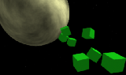
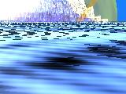
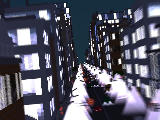
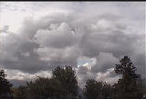

Welcome to media.xiph.org, a repository for freely-redistributable test sets. We use these to test our codecs, and hope you will too.
|
 |
Venus Cubes [1.67:1 | 250 frames]
This is a test animation based on the some shaders from Ken Musgrave's Texturing and Modeling: A Procedural Approach put together by Mark Beckwith. Rendered with BMRT. Source: RenderMan Repository. |
|
 |
Impact [4:3 | 739 frames] no commercial use
A section of a povray animation showing a comet hitting the earth's ocean. Source: Scott Manley (original). |
|
 |
Night Flight [4:3 | 214 frames] no commercial use
An animated nighttime flight down a city corridor. Source: Scott Manley (original). |
|
 |
Time-lapse clouds [4:3 | 96 frames]
A time-lapse movie of clouds. Each frame represents 3 seconds. Needs cropping. Source: Ralph Giles. |